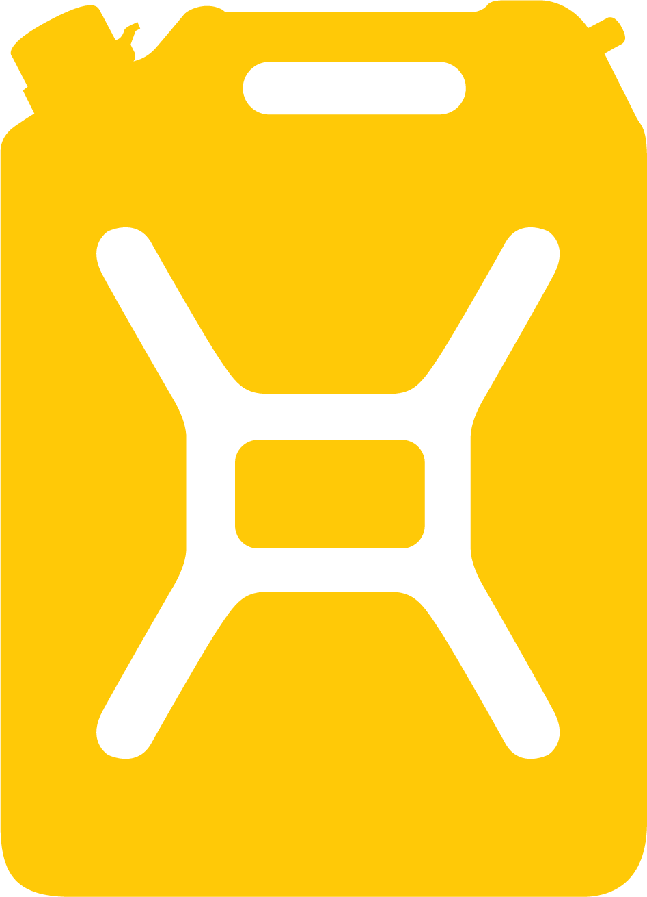

How to Play:
Select a Jerry Can and press "Run" to start a race.
Mark facts correctly/incorrectly to boost/hinder the your Jerry Can's progress.
If your Jerry Can wins, your scores increases! But if your Jerry Can does not win, your score decreases...
Press "Reset" to bet and race again and see how high you can make your score!